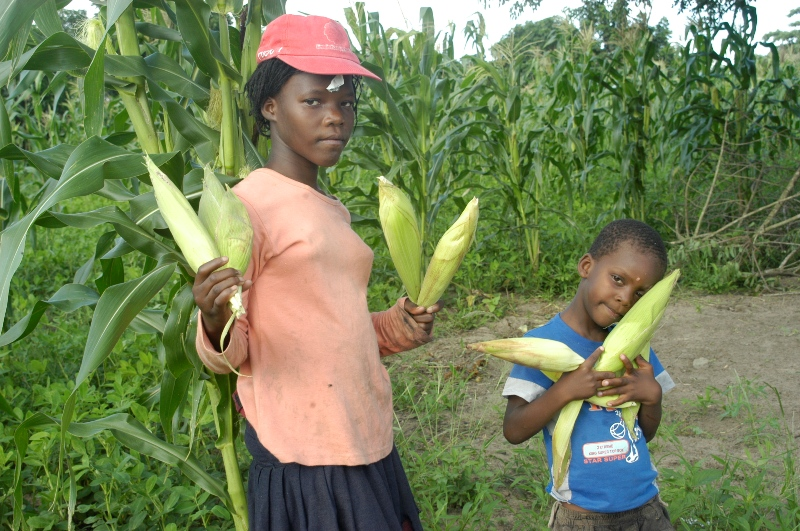
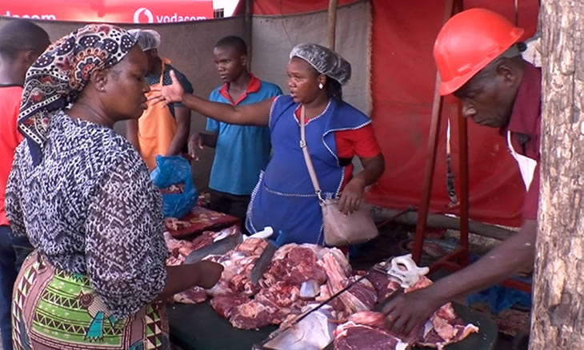
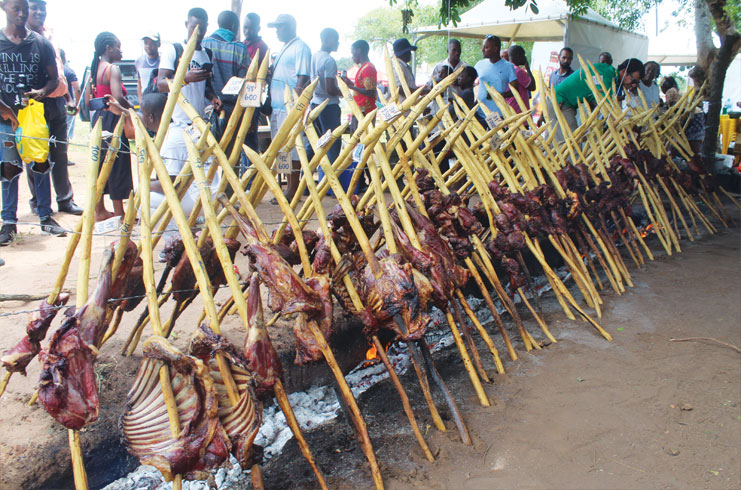
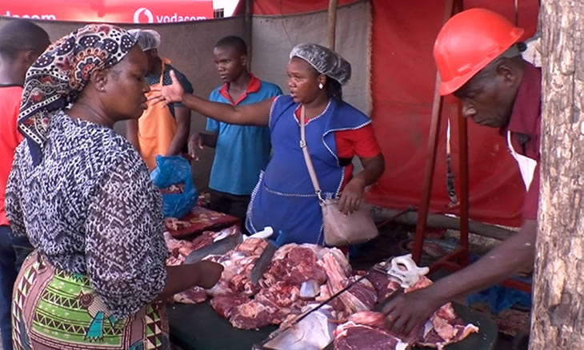
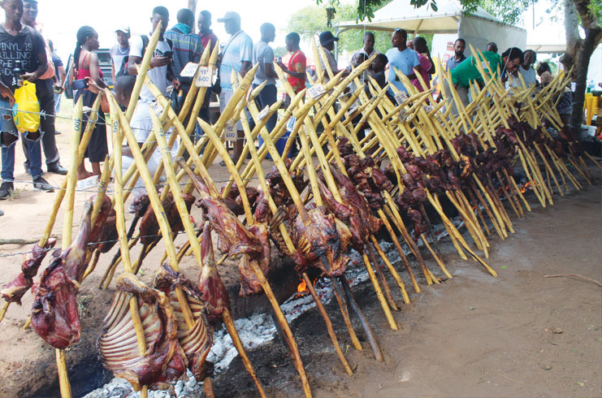
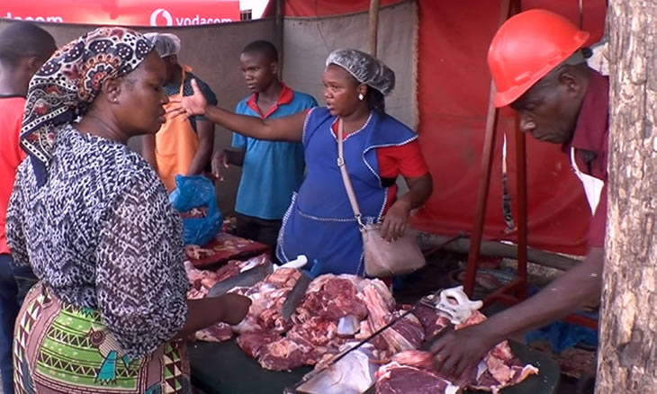
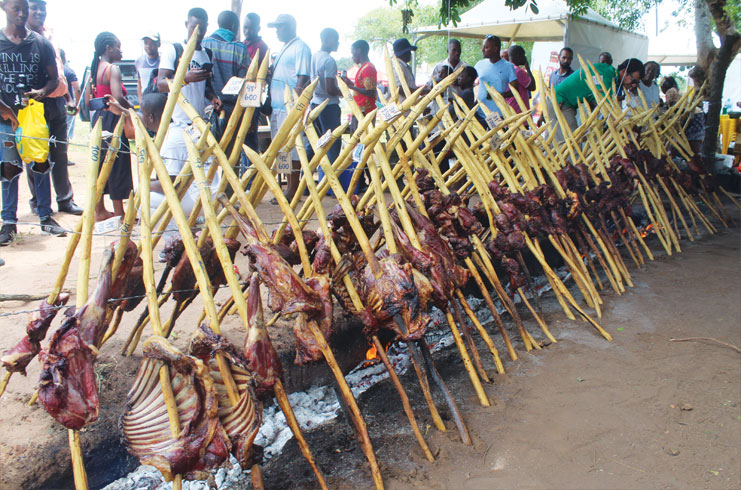

Os Nossos Produtos
Produtos Agrícolas e Carne Bovina
Ajudamos a tornar a agricultura familiar de Magude mais sustentável, expondo-a ao mundo digital e aumentando o rendimento dos agricultores. Dessa forma, contribuímos para que essa atividade se torne mais sustentável. Também promovemos a carne bovina fresca de Magude no mercado global, atraindo mais clientes para os produtores locais.

 




